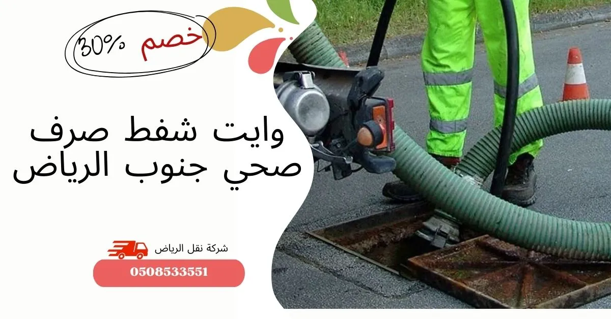

وايت شفط صرف صحي جنوب الرياض

يعتبر موضوع أسعار وايتات الصرف الصحي في الرياض من المواضيع التي تشغل بال العديد من السكان، حيث تختلف الأسعار بناءً على عدة عوامل تؤثر في التكلفة النهائية لهذه الخدمة، ومن بين العوامل التي تؤثر في تحديد الأسعار نجد حجم الوايت ونوع الخدمة المقدمة والموقع الجغرافي، وبالإضافة إلى ذلك تبرز خدمة وايت شفط صرف صحي جنوب الرياض كأحد الخيارات الأكثر طلبًا في المدينة، لذا من المهم معرفة التفاصيل المتعلقة بالأسعار والخدمات المقدمة لضمان الحصول على أفضل العروض من الشركات المتخصصة مثل شركة نقل الرياض، التي توفر مجموعة واسعة من الحلول المناسبة لاحتياجات العملاء.
أسعار وايتات الصرف الصحي الرياض
تعتبر أسعار وايتات الصرف الصحي في الرياض من العوامل الهامة التي تؤثر على اتخاذ قرار استخدام هذه الخدمات، ويعتمد سعر الوايت على عدة عوامل، منها حجم الوايت ونوع الخدمة المقدمة، ويعتبر وايت شفط صرف صحي جنوب الرياض من الخيارات الشائعة، حيث يتيح للسكان الحصول على خدمات شفط فعالة وبأسعار تنافسية، ومن المهم التعرف على العوامل التي تؤثر في الأسعار قبل اتخاذ القرار، وأهمها:
حجم الوايت
يتوفر في السوق أحجام مختلفة من وايتات الشفط، تتراوح بين 3,000 و 12,000 لتر، وعادةً ما يكون الحجم الأكبر مناسبًا للمشاريع الكبيرة أو المناطق ذات الكثافة السكانية العالية، بينما يمكن أمن المهم اختيار الحجم المناسب لتجنب تكاليف إضافية أو تأخير في الخدمة.
نوع الخدمة
تشمل خدمات وايتات الصرف الصحي عدة خيارات مثل شفط الصرف الصحي وتنظيف خزانات المياه وإزالة المخلفات، وتختلف الأسعار حسب نوع الخدمة، لذا يُفضل الاستفسار عن التكلفة قبل البدء، ويمكن أن تشمل الخدمات أيضًا صيانة أنظمة الصرف الصحي وتقديم استشارات حول كيفية الحفاظ على صحة النظام.
الموقع الجغرافي
قد تؤثر تكلفة النقل والخدمات على الأسعار، وعادةً ما تكون الأسعار في المناطق المركزية أعلى مقارنةً بالمناطق النائية، لذلك يفضل مقارنة الأسعار بين الشركات المختلفة في المنطقة.
الوقت المطلوب للخدمة
يمكن أن تختلف الأسعار بناءً على مدى تعقيد الخدمة المطلوبة، وعلى سبيل المثال قد تتطلب الحالات الطارئة أو الانسدادات الشديدة وقتًا إضافيًا مما قد يرفع التكلفة.
وايت شفط صرف صحي بالرياض
تعد خدمة وايت شفط صرف صحي بالرياض من الخدمات الأساسية التي يحتاجها العديد من السكان خاصةً في ظل الزيادة السكانية والنمو العمراني، ويستخدم هذا النوع من الخدمة لضمان صحة المجتمع وسلامة البيئة، ويعتبر وايت شفط صرف صحي جنوب الرياض من الخيارات المتاحة للعديد من العملاء الذين يسعون للحصول على خدمات موثوقة وفعالة، ومن المهم فهم كيفية عمل هذه الخدمة وما يمكن توقعه منها.
أرقام وايت شفط صرف صحي
تعتبر أرقام وايت شفط صرف صحي من المعلومات الأساسية التي يسعى العملاء للحصول عليها، والتي من خلالها يستطيعوا:
- سهولة الوصول: توفر شركتنا أرقامًا متنوعة تشمل خدمة العملاء والدعم الفني مما يضمن استجابة سريعة وفعالة عند الحاجة، كما توفر أيضًا خدمة الواتساب لتسهيل التواصل.
- تحديث المعلومات: يجب على العملاء متابعة تحديثات الأرقام حيث يمكن أن تتغير بمرور الوقت، ويفضل زيارة الموقع الرسمي أو متابعة صفحات التواصل الاجتماعي للحصول على أحدث المعلومات.
- توافر الخدمة على مدار الساعة: تقدم الشركة خدماتها على مدار الساعة مما يسمح للعملاء بالاتصال في أي وقت، ويعتبر هذا الأمر مهمًا خاصةً في حالات الطوارئ.
وايت شفط صرف صحي جنوب الرياض
تتزايد الحاجة إلى خدمات وايت شفط صرف صحي جنوب الرياض بسبب الكثافة السكانية والتوسع العمراني في المنطقة، وتلعب هذه الخدمة دورًا حيويًا في الحفاظ على الصحة العامة والبيئة، وتتميز خدماتنا ب:
الاستجابة السريعة
تقدم الشركات في جنوب الرياض خدمات سريعة وفعالة، مما يساعد في التعامل مع حالات الطوارئ مثل الانسدادات أو التسريبات مما يحمي الممتلكات من الأضرار، وتتوفر خدمات الطوارئ على مدار الساعة لضمان استجابة فورية.
توسيع الخدمات
تشمل خدمات وايت الشفط أيضًا تنظيف خزانات المياه مما يساهم في ضمان جودة المياه المستخدمة في المنازل والمرافق العامة، وتقدم بعض الشركات خدمات الصيانة الدورية للحفاظ على نظام الصرف الصحي في حالة جيدة.
السعر التنافسي
تقدم الشركات في هذه المنطقة أسعارًا تنافسية مما يساعد السكان على الحصول على الخدمات اللازمة دون تكبد تكاليف باهظة، وينصح دائمًا بالحصول على عروض أسعار من عدة شركات لمقارنة الأسعار والخدمات.
تقييم العملاء
تشجع الشركات العملاء على ترك تقييماتهم بعد استخدام الخدمة مما يساعد في تحسين الأداء ويعكس مدى رضا العملاء عن الخدمة المقدمة.
توافر المعدات الحديثة
تستخدم الشركات في جنوب الرياض معدات حديثة ومتطورة لضمان تقديم خدمات شفط فعالة وآمنة، مما يعزز من جودة الخدمة ويساهم في سرعة الإنجاز.
خدمات شركة نقل الرياض
تعد شركة نقل الرياض من أبرز الشركات التي تقدم خدمات متكاملة في مجال الصرف الصحي والنقل، وتسعى الشركة لتلبية احتياجات العملاء بجودة فائقة وأسعار تنافسية مما جعلها خيارًا مميزًا للسكان، كما تعتبر خدمات وايت شفط صرف صحي جنوب الرياض من أبرز ما تقدمه الشركة لتلبية احتياجات الأفراد والمؤسسات، ومن بين أنواع الخدمات التي تقدمها الشركة:
- توفير وايتات شفط الصرف الصحي لتصريف المياه والمخلفات.
- تنظيف وتعقيم خزانات المياه لضمان مياه نقية.
- نقل النفايات الصلبة والسائلة بطرق آمنة وفعالة.
- تقديم استشارات متخصصة لتحسين أنظمة الصرف الصحي.
التواصل مع شركة نقل الرياض
تسعى شركة نقل الرياض لتسهيل عملية التواصل مع العملاء، حيث توفر قنوات اتصال متعددة تضمن تلبية احتياجاتهم بسرعة وكفاءة، ويعتبر التواصل الفعّال أمرًا ضروريًا للحصول على خدمات وايت شفط صرف صحي جنوب الرياض بشكل سريع وموثوق، كما تمتلك الشركة خدمة عملاء تتميز ب :
| تعدد وسائل التواصل | توفر الشركة أرقام هاتفية 0508533551 وبريد إلكتروني ومنصات تواصل اجتماعي مما يسهل على العملاء الوصول إلى الخدمة في أي وقت، وتشمل وسائل التواصل أيضًا الدردشة الحية على الموقع الرسمي. |
| تعدد وسائل التواصل | تتميز الشركة بتقديم خدمة عملاء مميزة، حيث يتم تدريب الموظفين على التعامل مع الاستفسارات والشكاوى بفعالية مما يعكس التزام الشركة بتقديم أفضل تجربة للعملاء، ويتمتع فريق خدمة العملاء بالمعرفة الكافية حول جميع خدمات الشركة. |
| المراجعات والتقييمات | تتميز الشركة بتقديم خدمة عملاء مميزة، حيث يتم تدريب الموظفين على التعامل مع الاستفسارات والشكاوى بفعالية مما يعكس التزام الشركة بتقديم أفضل تجربة للعملاء، ويتمتع فريق خدمة العملاء بالمعرفة الكافية حول جميع خدمات الشركة. |
| تقديم العروض الترويجية | تستخدم الشركة وسائل التواصل الاجتماعي لإعلان عن العروض الترويجية والخصومات، مما يساعد العملاء على الاستفادة من الخدمات بأسعار تنافسية. |
الأسئلة الشائعة حول وايت شفط صرف صحي جنوب الرياض
هل هناك أنواع مختلفة من الخدمات المقدمة مع وايتات الصرف الصحي؟
نعم تشمل الخدمات شفط الصرف الصحي مثل تنظيف خزانات المياه وإزالة المخلفات بالإضافة إلى صيانة أنظمة الصرف الصحي.
كيف يمكنني اختيار حجم الوايت المناسب لاحتياجاتي؟
يجب اختيار الحجم بناءً على حجم المنطقة أو المشروع، حيث أن الأحجام الكبيرة مناسبة للمشاريع الكبيرة أو المناطق السكنية ذات الكثافة العالية.
هل تؤثر المسافة الجغرافية على تكلفة الخدمة؟
نعم المناطق البعيدة أو النائية قد تتطلب رسوم إضافية نظرًا لتكاليف النقل.
هل يمكنني الحصول على خدمة وايت شفط صرف صحي جنوب الرياض في حالات الطوارئ؟
نعم توفر شركة نقل الرياض خدمات الطوارئ على مدار الساعة لضمان الاستجابة السريعة في حالات الانسدادات أو التسريبات.